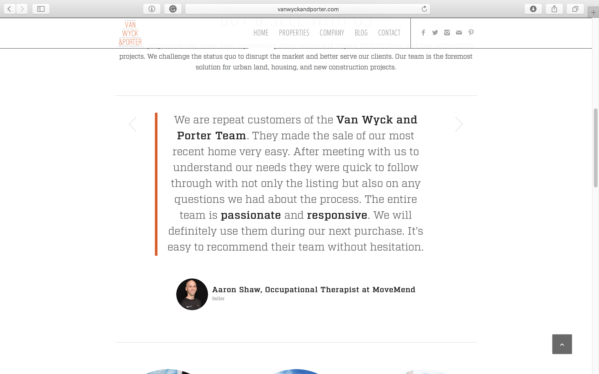
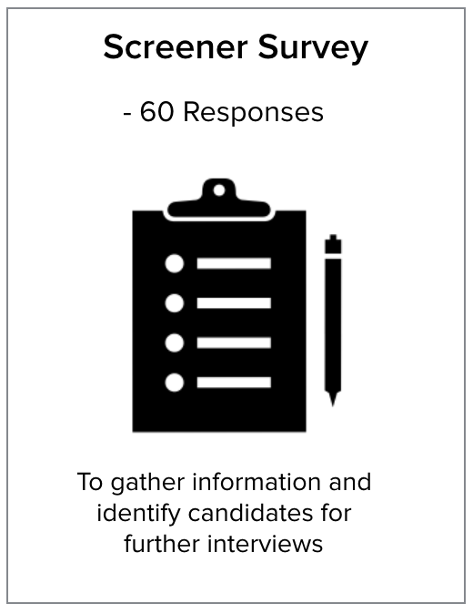
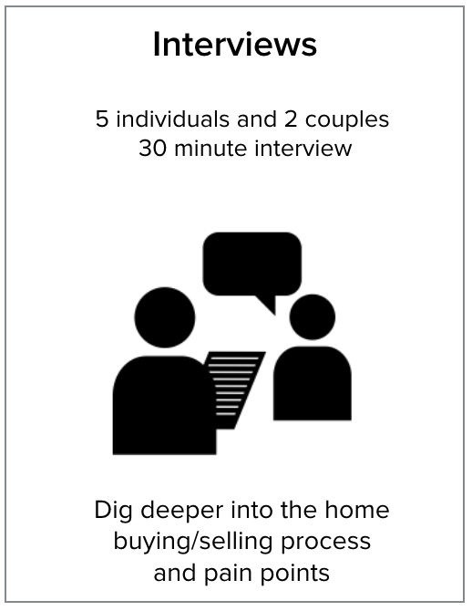
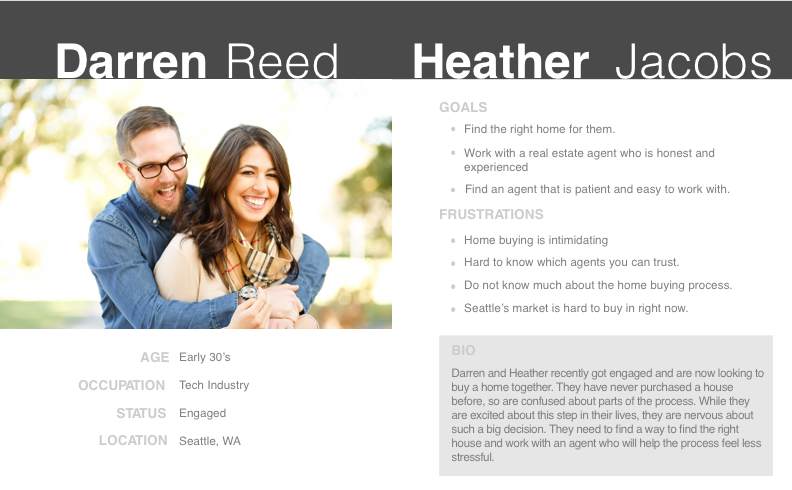
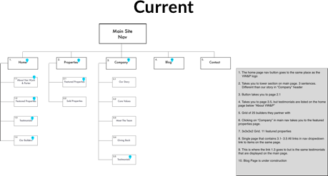
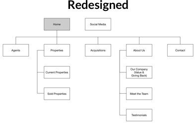
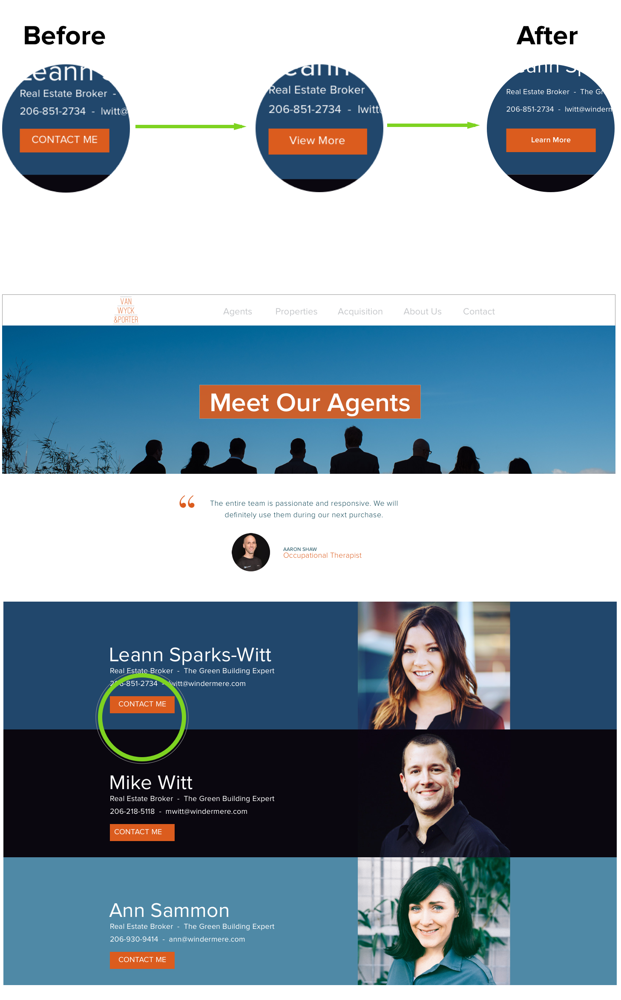
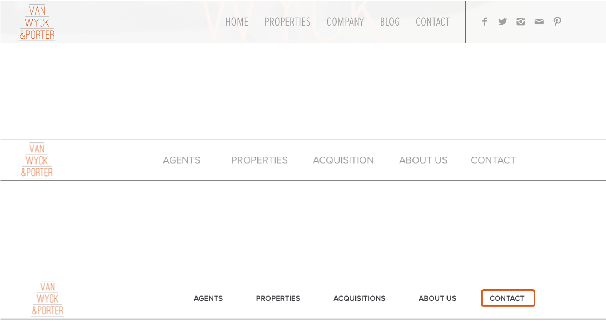

Van Wyck & Porter is a real estate company located at Seattle, Washington. Their current website was built about 2 years ago. However, some of the VW &P website users found their website hand to navigate. Especially for frist time users, it was not easy to understand VW & P’s service. This is a screen shot of how their current website:
After getting some basic information about VW & P’s website, my team (Ben Aleshire and Keith Brandtjen ) created a project plan:
Understanding VW&P's current business model and what their needs are for their website. Define project scope and assign project planner and point of contact.
My team understands research should have multiple perspectives to see existing and potential problems. Here are some different approaches during our research phase:
First, we sent out a survey to filter out people haven't purchased property or not planning to in the next year. Then we use survey results to schedule user interviews.
 We use affinity diagram categorized interview information by emotions, pain points, technic difficulty and user needs.
Frist, we sent out a survey to filter out people haven't purchased property or not planning to in the next year. Then we use survey results to schedule user interviews.
 Based on our initial design, we did some informal testing and usability testing.
 